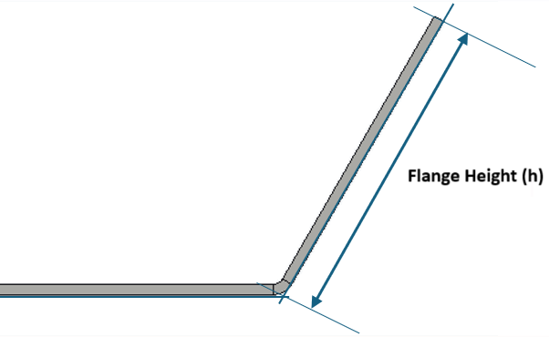
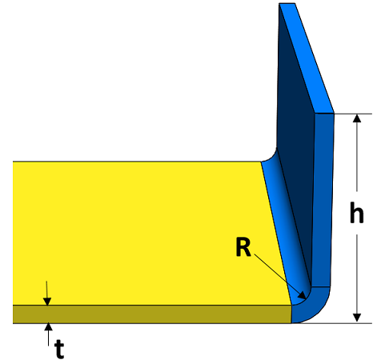

板金部品の特定の材料に対して、フランジ部での板厚の過度な減肉を防ぐため、適切な曲げ半径およびフランジ高さを持つフランジ形状を使用する必要があります。
軟質材料における材料流動の問題や、硬質材料における破断を防ぐために、適切な曲げ半径を伴うフランジを確保する必要があります。さらに、部品に所望の形状を形成する際に、部品を所定の位置に保持するための十分な把持力を確保するには、十分なフランジ高さを維持する必要があります。また、高さの小さいフランジは製造が困難です。

このルールは、板厚に基づいて材料ごとに許容されるフランジパラメータを指定するように構成できます。材料は マテリアルデータベース から追加できます。

ここで、
t = 板厚
R = 内側曲げ半径
h = フランジ高さ
ユーザーは、Import ボタンを使用して、Excel シートテンプレートに含まれる大量のデータをインポートできます。
標準テンプレート形式:
t |
R |
h |
2.2 |
10 |
30.1 |
3.1 |
5.9 |
25.3 |
1.3 |
7.5 |
42.3 |